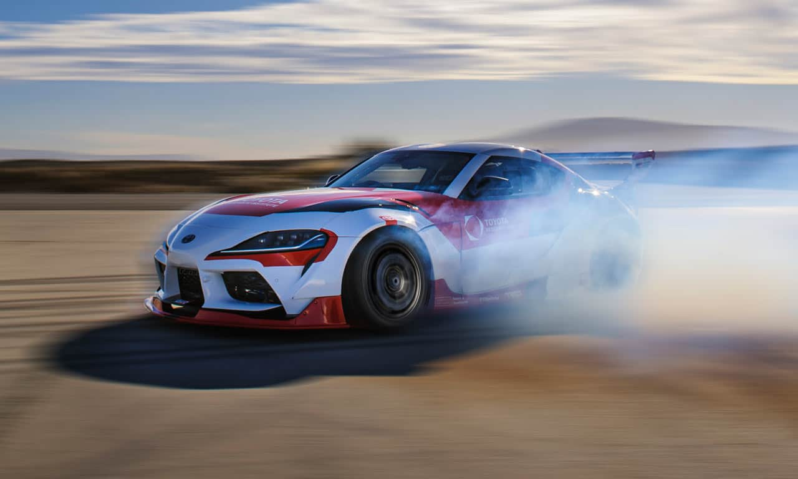

O drift no mundo dos carros é uma técnica de direção em que o motorista faz o carro derrapar de lado nas curvas, fazendo com que os pneus traseiros percam parte da aderência com o asfalto. Mesmo com o veículo deslizando, o piloto utiliza o volante, o acelerador e os freios para manter o controle e seguir a trajetória desejada. Essa técnica exige muita habilidade, precisão e prática.
O drift ficou muito famoso no Japão e se tornou popular em competições automobilísticas, filmes e jogos de corrida. Além de ser considerado um esporte a motor, ele também é admirado pelo espetáculo visual das derrapagens, pela fumaça dos pneus e pelo controle do carro. Atualmente, existem campeonatos profissionais em que os pilotos são avaliados pela técnica, pelo ângulo da derrapagem e pela precisão das manobras.
A cultura do drift surgiu no Japão, principalmente entre as décadas de 1970 e 1980, quando alguns pilotos começaram a usar técnicas de derrapagem nas estradas sinuosas das montanhas japonesas. Um dos nomes mais associados ao desenvolvimento dessa cultura é Kunimitsu Takahashi, ex-piloto de motociclismo e automobilismo que ficou conhecido por fazer curvas com o carro deslizando de lado nas pistas.
A cultura cresceu nas estradas de montanha japonesas, chamadas touge, onde entusiastas de carros praticavam derrapagens e disputas de direção. Em 1987, o piloto Keiichi Tsuchiya, conhecido como “Drift King” (Rei do Drift), ajudou a popularizar a prática com um vídeo chamado Pluspy, que inspirou muitos outros motoristas. Com o tempo, o drift saiu das ruas e passou para pistas e campeonatos oficiais, como o D1 Grand Prix, criado em 2001. Depois, filmes, animes e jogos ajudaram a espalhar essa cultura pelo mundo.
Os carros usados no drift geralmente são veículos de tração traseira, pois esse tipo de tração facilita fazer o carro derrapar nas curvas usando o acelerador. Os pilotos costumam escolher modelos com boa potência, equilíbrio, resistência mecânica e facilidade para modificar e preparar o veículo.
| Critérios | O que significa |
|---|---|
| Ângulo | Inclinação do carro durante o deslizamento. |
| Linha | Traçado seguido pelo piloto na pista. |
| Fluidez | Continuidade e controle das manosbras. |
| Precisão | Capacidade de passar pelos pontos definidos. |
| Estilo | Execução visual e consistência da apresentação. |
O preparo de um carro para drift consiste em fazer modificações que permitem ao veículo derrapar nas curvas com controle, segurança e precisão. Geralmente, são escolhidos carros com tração traseira, pois ela facilita a perda controlada de aderência dos pneus traseiros. Modelos como Nissan Silvia e BMW Série 3 são usados em projetos de drift.
Uma das principais modificações é no motor, que pode receber melhorias para aumentar a potência. A suspensão também é modificada para melhorar a estabilidade e permitir maior ângulo de direção nas curvas. Além disso, podem ser instalados um diferencial autoblocante, freios adequados, bancos esportivos e cintos de segurança específicos para competição.
Os pneus também são importantes, pois os traseiros precisam permitir a derrapagem, enquanto os dianteiros devem oferecer controle e precisão na direção. Alguns carros recebem reforços estruturais e equipamentos de segurança, como gaiola de proteção e sistema de combate a incêndio. O preparo varia conforme o nível do piloto e o tipo de competição, mas deve sempre priorizar a segurança e a confiabilidade mecânica do veículo.
O drift é uma modalidade automobilística que surgiu no Japão e se tornou uma parte importante da cultura automotiva mundial. Essa prática consiste em fazer o carro derrapar de lado nas curvas, mantendo o controle do veículo por meio do volante, do acelerador e dos freios. Com o passar dos anos, o drift deixou de ser apenas uma técnica de direção e se transformou em um esporte com competições, pilotos profissionais e fãs em diversos países.
A cultura do drift também está ligada à personalização dos carros, à preparação dos motores, às modificações na suspensão e à estética dos veículos. Filmes, animes e jogos de corrida ajudaram a popularizar esse estilo, despertando o interesse de muitas pessoas pelo universo automotivo. Para os entusiastas, o drift representa não apenas velocidade e habilidade, mas também criatividade, dedicação e paixão por carros, sendo praticado de forma adequada em pistas e eventos autorizados.